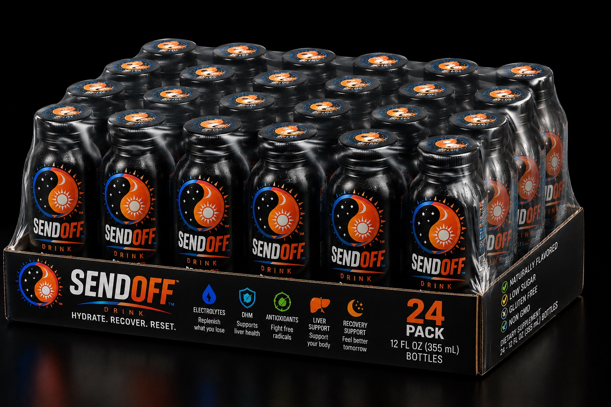
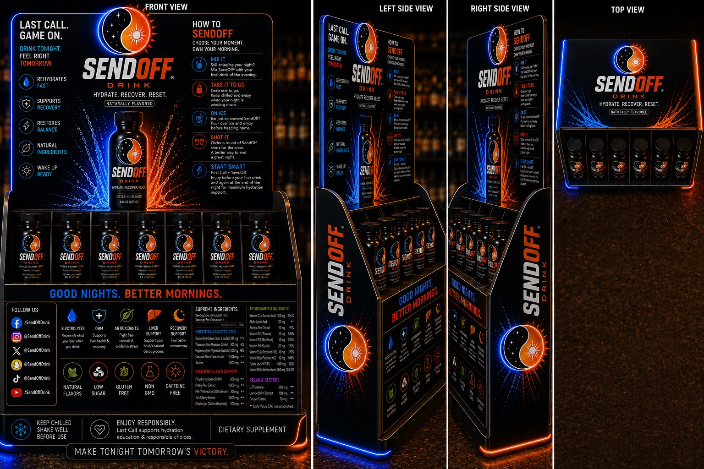
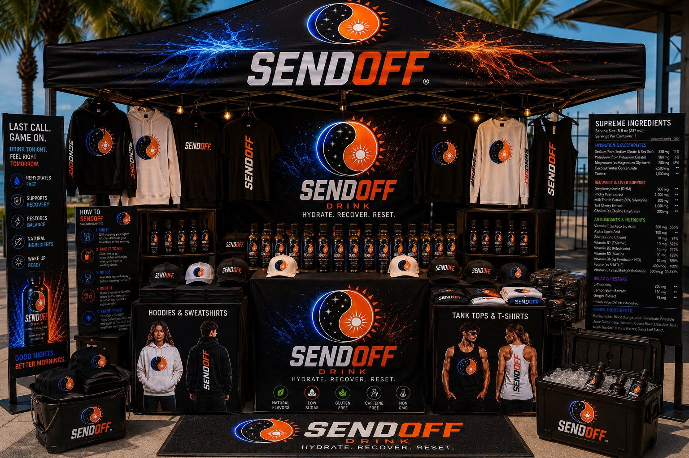
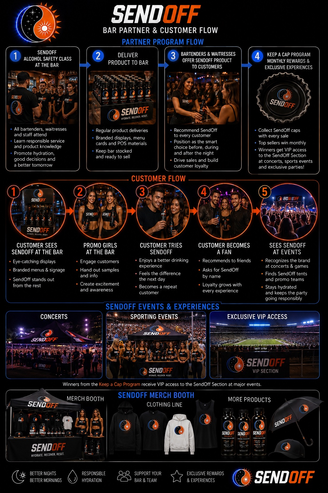
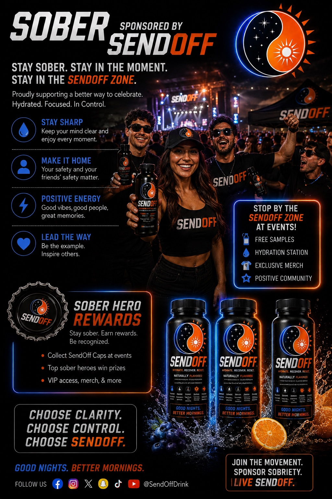
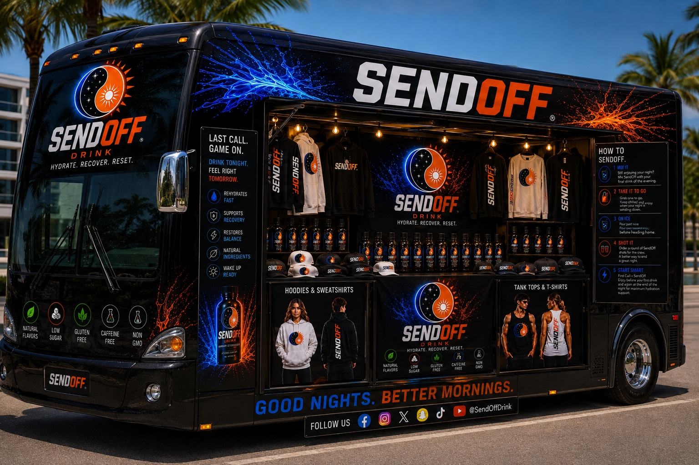
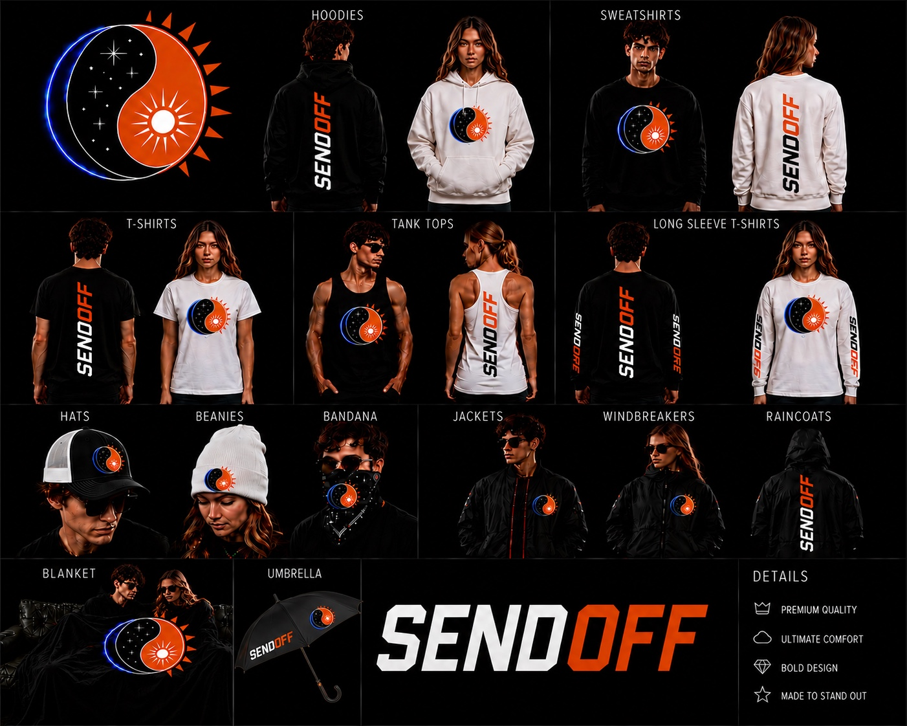
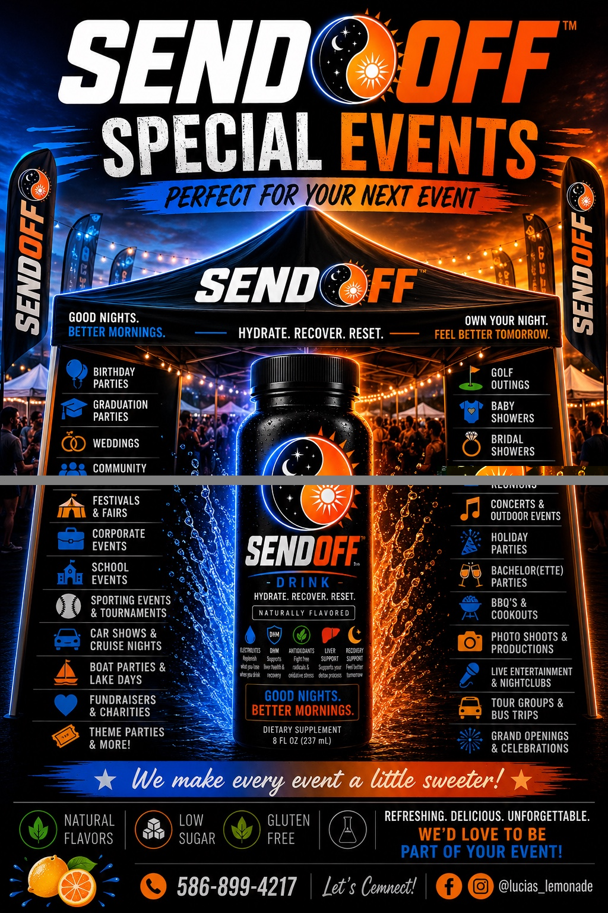
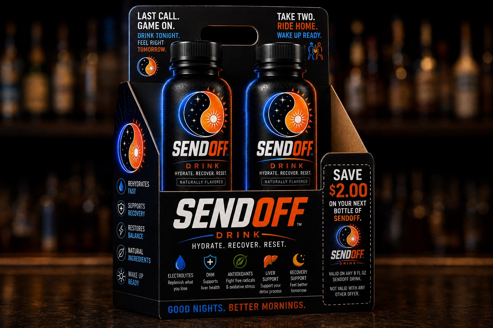

A moment people understand
A clear use occasion built around the end of the night.

LAST CALL. GAME ON.
The last drink of the night—with hydration, recovery and tomorrow in mind. Discover the idea built for bars, events, retailers and unforgettable nights.
PRELAUNCH · CONSUMER + PARTNER INTEREST NOW OPEN

WHY SENDOFF
SendOff is a distinctive beverage concept created for the moment when the night begins winding down. The brand pairs unforgettable blue-and-orange energy with a simple idea: finish the night with intention.
Product formulation, availability and final label details will be announced as the launch develops.
MEET THE DREAMMAKER
SendOff was created and is driven by Chuck Bell—known throughout Michigan's motorcycle community as “The DreamMaker.” That name was earned by listening to people, understanding what they really wanted and finding a way to make it happen.
Before SendOff, Chuck co-founded and operated Leather Works in Washington Township for a decade. The motorcycle retail business took him to trade shows and swap meets across Michigan, built lasting relationships throughout the riding community and helped raise hundreds of thousands of dollars for charitable causes.
Chuck brought that entrepreneurial experience to Wolverine Harley-Davidson, where he became the dealership's top salesperson and built a remarkable reputation for trust, energy and follow-through. Wolverine identifies him as Michigan's #1 Harley-Davidson salesperson and the highest-reviewed salesperson in the country. His professional record includes more than 500 five-star reviews.
“Chuck made it happen.”
SendOff brings those same strengths together: a memorable idea, relentless relationship-building and a founder who understands how to take a product directly to customers, retailers, venues and communities.
A clear use occasion built around the end of the night.
Day-and-night artwork designed to stand out across shelves, coolers and events.
From individual bottles and multipacks to bars, retail displays and live activations.
LAST CALL COCKTAILS
From the Sunset SendOff to Beam Me Home, the concept is made to fit naturally into the last round—served on its own or mixed into a memorable closing cocktail.
Concept recipes shown for adults of legal drinking age. SendOff is non-alcoholic and does not prevent intoxication. Enjoy responsibly and plan a safe ride home.

BARS · RETAILERS · VENUES
When you connect with SendOff, you are dealing directly with founder Chuck Bell—a proven retailer, relationship-builder and statewide event seller who understands how to bring a bold product to market.
EVENTS + EXPERIENCES
SendOff’s visual system extends naturally into event booths, branded displays, merchandise and sampling experiences. We’re interested in conversations with festivals, sporting events, community gatherings, private events and promotional partners.
DISCUSS AN EVENT →
MORE THAN A BOTTLE
SendOff is being built around real interaction—bartenders, customers, event teams and communities creating the kind of experience people want to share.
SEE THE SENDOFF COMMUNITY →

BUILT TO SHOW UP




READY FOR THE COUNTER
The SendOff identity is designed to translate from the cooler to the counter: bold bottles, multipacks, point-of-sale storytelling and an easy-to-understand moment of use.
GET IN EARLY
Consumers can join the prelaunch conversation. Bars, retailers, venues, distributors and event organizers can connect directly with Chuck Bell—the DreamMaker behind SendOff—and introduce themselves now.
charles@sendoffdrink.com